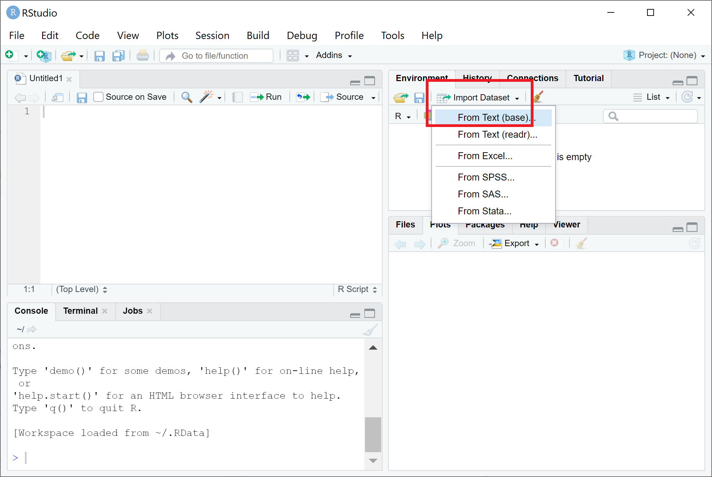

Chapter 7 Import and export files
7.1 Import files
You can import a file though R studio Environment:

And you will find out that by doing that you will also get the R command in the R console like below:
read.table() is the general function for reading tabular data.
read.table(file, header = FALSE, sep = "", dec = ".")“tab-separated values” files (“.txt”)
read.delim() is the same as read.table(file, header = TRUE, sep = “, quote =”", dec = “.”, fill = TRUE, comment.char = "").
read.delim(file, header = TRUE, sep = "\t", dec = ".", ...)
read.delim2(file, header = TRUE, sep = "\t", dec = ",", ...)“comma separated value” files (“.csv”)
read.csv2() is a variant used to read.csv(), the difference comes from different field separators decimal points.
read.csv(file, header = TRUE, sep = ",", dec = ".", ...)
read.csv2(file, header = TRUE, sep = ";", dec = ",", ...)You can import a file like this:
sampleinfo <- read.delim("data/SampleInfo.txt")Special case
If you want a row to be read as a string, you can use readlines():
sampleinfo_lines <- readLines("data/SampleInfo.txt")
lines_list <- strsplit(sampleinfo_lines,split = ',')7.2 Export files
Note: If you don’t specify the path, the data will be exported to your working directory.
You can save a single R object by saveRDS():
saveRDS(lines_list, "sampleinfo_lines.rds")Restore it:
lines <- readRDS("sampleinfo_lines.rds")You can also save multiple R objects:
save(data1, data2, file = "data.RData")Load the data again:
load("data.RData")In R, you can actually save the entire workspace, which is the current R working environment with all objects under it.
save.image(file = "my_workspace.RData")Load the workspace again:
load("my_workspace.RData")